🗺️ ציר זמן מהיר (Scrollable)
✅ צ'ק-ליסט משימות ותפעול בזמן אמת
0 / 0 הושלמו
▼
🚨 דחיפות מיידית (לשריין בהקדם)
🚗 תחבורה והשכרת רכב
🐋 אטרקציות וסיורי טבע
🌿 שמורות טבע SINAC ומסעדות (שבוע מראש)
🧭 המסלול לפי בלוקים של לינה
כל בלוק = מקום לינה אחד. בתוך כל בלוק: אפשרויות לאוכל, הליכות, אטרקציות ולוגיסטיקה. מתוכנן = כבר במסלול/במשימות, להזמין = דורש שריון מראש, השאר ספונטני.
לילה 121.9
🛬 סן חוסה: נחיתה ולילה ראשון
▼
🛬 סן חוסה: נחיתה ולילה ראשון
נוחתים ב-SJO בצהריים, נחים, ארוחת ערב קלה ולינה מוקדמת. ב-22.9 יוצאים 6:30–7:00 לרציף Caño Blanco (3–3.5 שעות) לסירה של 10:30. דרישה: מיטת קינג לנעם ואורית + מיטה נפרדת לנגה.
🏨 לינה, לפי סדר עדיפות
- Hotel Grano de Oro, סוויטה משפחתית ~$350–390. אחות של Tortuga Lodge (Böëna), מסעדה מצוינת, אפשר להזמין את ההסעה לרציף דרכם. ממתין להצעה
- Courtyard by Marriott SJO, King + ספה נפתחת, 38 מ"ר, ~$150–200. Booking
- Hampton by Hilton SJO, King Studio + ספה נפתחת, ~$150–190, ארוחת בוקר מוקדמת. כרטיס
- Xandari Resort, Ultra Villa, קינג + 2 ספות נפתחות, נוף לעמק, ~$280–400. Booking
- Marriott Hacienda Belén: רק עם 2 חדרים (אין קינג + מיטה שלישית). כרטיס
🍽️ אוכל
- ארוחת ערב במלון (ב-Grano de Oro: המסעדה נחשבת מהטובות בעיר, לבקש שולחן בפאטיו)
- אם ליד השדה: Jalapeños Central באלחואלה (טקס-מקס, זול וטוב), או Chubascos בדרך לפואס אם רוצים נסיעה קצרה
- בוקר 22.9: קפה ופרי לדרך מהמלון, צהריים כלולים בלודג' ב-12:00
🎟️ אם יש כוח (לא חובה)
- Mercado Central + Teatro Nacional במרכז סן חוסה, שעתיים. רלוונטי רק אם לנים ב-Grano de Oro
- בריכה ומנוחה. מחר קמים ב-6:00
🚗 לוגיסטיקה
- שאטל מהשדה למלון (כלול ברוב המלונות ליד השדה)
- 22.9: הסעה פרטית לרציף Caño Blanco. עדיפות להצעת הלודג'/Böëna (מתואם עם הסירה). חלופה: ואן פרטי ~$245–260 להזמין
- אין רכב שכור בשלב הזה, האיסוף בלה פורטונה ב-24.9
2 לילות22–24.9
🐢 טורטוגרו: Tortuga Lodge & Gardens
▼
🐢 טורטוגרו: Tortuga Lodge & Gardens
Full Experience: כל הארוחות, שיט הלוך ושוב, עד 2 סיורים משותפים לכל לילה (4 לאדם), עיסוי לחדר. סיור הצבים לא כלול ונקנה בנפרד. 💲 פרטי ההזמנה
🎟️ סיורים כלולים (לבחור עד 4 לאדם)
- Natural History Boat, 3 שעות, שיט שקט בתעלות עם שחר. הכי חשוב מתוכנן 23.9 בוקר
- כפר טורטוגרו, שעתיים, היסטוריה וקהילה קריבית מתוכנן 22.9 אחה"צ
- Twilight / Night Walk בשמורה הפרטית של הלודג', שעתיים, צפרדעים ועכבישים
- קיאק בתעלות, שעתיים (נגה 16: קיאק יחיד בליווי מבוגר)
- Cerro Tortuguero, טיפוס שעתיים לתצפית היחידה על החוף הקריבי
- Early Birds צפרות עם שחר, או Laguna 4 שיט ארוך
🐢 בתשלום נוסף
- הטלת צבים, ליל 22.9, $100 לאדם, קבוצות עד 10 עם מדריך מורשה. הסיבה לטיול להזמין
- בקיעת גורי צבים, שחר או לפני שקיעה, $60 לאדם, עונה מ-15.9 אופציונלי
- שיעור בישול קריבי פרטי, $50 לאדם, אם גשום
- כניסה לפארק הלאומי לשביל היבשתי El Gavilán, $17, דרך SINAC אם לא כלול בסיור
🍽️ אוכל
- Mydas Nest, מסעדת הלודג', 3 ארוחות ביום כלולות. לציין פסקטריאנית מראש
- Miss Junie's בכפר, דג שלם בקארי קוקוס, $15–25, אם רוצים ארוחה אחת מחוץ ללודג'
- Budda Café על הנהר בכפר, קפה וקינוח אחרי סיור הכפר
🥾 הליכות
- שבילי הלודג' בשמורה הפרטית (26 הקטאר), עצמאי, מגפיים מסופקים
- הליכה על החוף מול הכפר ביום (בלילה רק עם מדריך)
- Cerro Tortuguero (ראו סיורים)
🚗 לוגיסטיקה
- 22.9: להגיע ל-Caño Blanco עד 10:00, סירה 10:30, הגעה ללודג' 12:00, צהריים
- 24.9: סירה 8:30, ברציף ב-10:00, ואן ללה פורטונה ~3.5 שעות, עצירה ב-Tirimbina (שוקולד, שעתיים) בדרך להזמין
- הצעות להסעה: Böëna, צוות Keljá (מציעים הסעות פרטיות), או ואן פרטי $323
- איסוף רכב 4x4 בלה פורטונה אחה"צ (Adobe מספקים לכתובת) להזמין
3 לילות24–27.9
🌋 ארנאל: Arenal Keljá, וילה עם 2 חדרי קינג
▼
🌋 ארנאל: Arenal Keljá, וילה עם 2 חדרי קינג
וילה בת 2 חדרי שינה עם קינג בכל אחד, מטבח, בריכה מחוממת עם ג'טים, נוף להר הגעש, נהר לה פורטונה בשטח. 3 ק"מ מהעיירה, 1 ק"מ מכביש המפל. אין ארוחת בוקר ואין מעיינות חמים במקום, אז שתי ההוצאות האלה נמצאות ברשימות למטה. 💲 פרטי ההזמנה
♨️ מעיינות חמים (לבחור ערב אחד או שניים)
- Tabacón, הכי יפה, נהר תרמי ביער. יום $99, ערב 18:00–22:00 עם ארוחת ערב ~$168 מתוכנן 24.9 ערב להזמין
- Ecotermales, קטן, שקט, מוגבל ל-100 איש, ~$50–60. הזמנה מראש חובה
- Baldi, הגדול והזול, ~$40, מגלשות, רועש
- Paradise Hot Springs, בינוני ורגוע, ~$40
- El Chollín, הנהר החם החינמי מול Tabacón, עצירה של חצי שעה ביום
🍽️ אוכל
- בוקר בווילה: MegaSuper / Super Cristian במרכז, מאפייה Musmanni, 8 דקות
- Don Rufino, מסעדת השף של העיירה, $40–60 מתוכנן 26.9 להזמין כרטיס
- Que Rico Arenal, פיצה מתנור עצים ונוף להר, בדרך לפארק. טוב לערב הראשון
- Restaurante Nene's, טיקו קלאסי, דג שלם וקסאדו
- Chifa La Familia Feliz, פרואני-סיני, פירות ים, פופולרי
- Anch'io, איטלקי, פסטה צמחונית ודגים
- Mercadito Arenal, שוק אוכל קטן: טאקו, סביצ'ה, בר
- Soda Víquez, צהריים ב-$10, קסאדו צמחוני
- בוקר בחוץ: Chocolate Fusion או Mi Casa Café
🥾 הליכות
- Místico Hanging Bridges, 3 ק"מ, 16 גשרים, $36 עצמאי / $50 מודרך מתוכנן 25.9 בוקר
- מפל לה פורטונה, 500 מדרגות ושחייה, $20, 5 דקות מהווילה מתוכנן 25.9
- Arenal 1968, שביל הלבה, 2.5 ק"מ, הנוף הקרוב ביותר ללוע, $25
- Arenal Volcano NP, שבילי Coladas / Peninsula, $17, נוף לאגם
- Bogarín Trail בעיירה, עצלנים כמעט מובטחים, ~$20 עם מדריך
- El Silencio Mirador, תצפית שקטה על ההר, $10
- שבילי הנהר של Keljá, קצרים, צפרדעי חץ
- Cerro Chato סגור רשמית, לא ללכת
🎟️ אטרקציות
- Sky Trek אומגה + Sky Tram, $93, הנחת EARLYBIRD 10% מתוכנן 26.9 בוקר להזמין
- Proyecto Asís, מקלט חיות בר, $40 / $60 עם התנדבות מתוכנן 26.9 אחה"צ להזמין
- הליכת לילה Arenal Oasis ($56) או Ecocentro Danaus, 17:45–20:00 מתוכנן 25.9 ערב להזמין
- סיור שוקולד: Tirimbina בדרך מטורטוגרו ($42) או Rainforest Chocolate Tour בעיירה ($32) מתוכנן 24.9
- אגם ארנאל: קיאק / SUP / שייט שקיעה, ~$50–70, או נסיעת שקיעה לכביש האגם ול-El Castillo
- Venado Caves, מערות עם עטלפים, $30, שעה נסיעה, ליום גשום
- Butterfly Conservatory ב-El Castillo, $18
- רכיבת סוסים למפל, טיובינג בנהר, ATV: צוות Keljá מארגן, לשאול מחירים
- Oasis Spa בשטח Keljá, עיסוי אחרי יום הליכה
🚗 לוגיסטיקה
- צ'ק-אין עצמאי מ-15:00 (מנעול חכם), צ'ק-אאוט 11:00
- איסוף 4x4: Adobe מספקים ללה פורטונה, לתאם מסירה בווילה או במשרד בעיירה
- 27.9: נסיעה לאוביטה 5–5.5 שעות דרך גשר התנינים בטארקולס. יציאה עד 8:30
- הצעת הסעה של Keljá מ-Caño Blanco (24.9) יכולה להחליף את הוואן הפרטי
3 לילות27–30.9
🐋 אוביטה: La Cusinga Eco Lodge (או חלופה)
▼
🐋 אוביטה: La Cusinga Eco Lodge (או חלופה)
לודג' אקולוגי על צוק מול מפרץ הלווייתנים, שבילים פרטיים לחוף. לפני ההזמנה: לוודא חדר עם קינג + מיטה נפרדת לנגה (החדרים הסטנדרטיים הם 2 מיטות זוגיות). 💲 מחירים וקישורים
🎟️ אטרקציות
- שייט לווייתנים ודולפינים, בוקר, $80–85, כולל כניסה לפארק. Bahía Aventuras / Ballena Tour מתוכנן 28.9 להזמין
- זנב הלווייתן, הליכה על החול בשפל בלבד. לבדוק טבלת גאות ל-28–29.9 מתוכנן
- מפלי נאוויאקה, הליכה 12 ק"מ ($10) או טנדר 4x4 ($32), שחייה בבריכה מתוכנן 29.9
- Hacienda Barú, שמורה פרטית ליד דומיניקל, שבילים ($10) והליכת לילה ($88)
- Alturas Wildlife Sanctuary, מקלט חיות, סיור מודרך $25
- Parque Reptilandia, זוחלים, $15, ליום גשום
- Caño Island, שנורקל ביום שלם, ~$150 לאדם, אם רוצים עוד יום ים
- דומיניקל, עיירת גלישה, שיעור גלישה $50–60
🥾 הליכות
- שבילי La Cusinga אל Playa Arco, חוף פרטי כמעט, חינם לאורחים
- חוף Marino Ballena מאוביטה עד זנב הלווייתן, $7 כניסה, בשפל
- Cascada Uvita, מפל קטן עם מגלשה טבעית, $3, 10 דקות מהעיירה
- Catarata Pavón באוחוצ'אל, קצר, לפני Citrus
- שבילי Hacienda Barú (ראו אטרקציות)
🍽️ אוכל
- Citrus באוחוצ'אל, ארוחת השף, $45–70, סגור בראשון מתוכנן 29.9 להזמין כרטיס
- Exotica ו-Azul באוחוצ'אל: עוד שתי מסעדות שף בכפר הקולינרי
- Sibu באוביטה, יומיומי טוב, $15–30 כרטיס
- The Dome, אוביטה, בוקר והמבורגרים
- Roadhouse 169, אוביטה, פאב עם ערבי מוזיקה
- Pancito Café, אוחוצ'אל, מאפייה צרפתית לבוקר
- מסעדת La Cusinga לערב עצלן עם נוף
🚗 לוגיסטיקה
- 27.9: בדרך מארנאל, עצירה בגשר נהר טארקולס (תנינים, חינם) מתוכנן
- 30.9: יציאה 6:30 למנואל אנטוניו (שעה צפונה), כניסה 7:30 עם מדריך ($59 כולל כניסה), חניה מאובטחת $6–10 מתוכנן להזמין
- 30.9 אחה"צ: מנואל אנטוניו → Finca Rosa Blanca כ-3.5 שעות
- הפארק מנואל אנטוניו סגור בימי שלישי, כרטיסים רק אונליין ב-SINAC
לילה אחרון30.9–1.10
☕ העמק המרכזי: Finca Rosa Blanca והמראה
▼
☕ העמק המרכזי: Finca Rosa Blanca והמראה
פונדק בוטיק במטע קפה אורגני, 25 דקות מהשדה. Junior Suite עם קינג + מיטה נוספת. ארוחת סיום במסעדת החווה. 💲 מחירים וקישורים
🎟️ אטרקציות ליום האחרון (לבחור אחת)
- סיור קפה בחווה, 2.5 שעות עם טעימות, $40 מתוכנן 1.10 בוקר להזמין
- הר הגעש פואס, שעה נסיעה, $17, חלון זמן של שעה, כרטיס רק ב-SINAC ~4 שבועות מראש מתוכנן אם בהיר
- גן Lankester בקרטגו, סחלבים, $12, שעה ורבע נסיעה. גיבוי לפואס
- La Paz Waterfall Gardens, מפלים + גן חיות, $50, שעה נסיעה. יקר אבל בטוח ביום גשום
- Sarchí, כפר האומנים ועגלות השוורים, 45 דקות, לקניות מזכרות
🍽️ אוכל
- El Tigre Vestido, מסעדת החווה, תפריט טעימות $65 או à la carte, להזמין 24 שעות מראש מתוכנן 30.9 ערב להזמין כרטיס
- ארוחת בוקר מלאה כלולה, קפה ועוגיות אחה"צ
- צהריים 1.10: במסעדת החווה או בדרך לשדה
🚗 לוגיסטיקה
- 1.10: החזרת הרכב בשדה SJO אחה"צ, 25 דקות מהחווה. לתדלק לפני
- להיות בשדה 3 שעות לפני ההמראה
- מס יציאה כלול בכרטיס הטיסה
🏨 מלונות ומסעדות: תמונות, מחירים וקישורים
לחצו על כל כרטיס לפרטים. המחירים בדולר, לשלושה, עונה ירוקה (ספטמבר 2026), ומבוססים על אתרי המלונות, Kayak/Momondo ו-Booking. מחיר מדויק לתאריכים שלנו יתקבל רק בהזמנה.
🛏️ לינה (10 לילות)
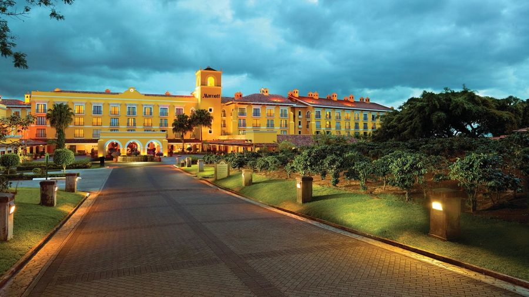
לילה 1 · 21.9
Costa Rica Marriott Hacienda Belén
הרדיה, 15 דק' מהשדה · אחוזה קולוניאלית עם מטע קפה
$230–320 ללילה
▼
Costa Rica Marriott Hacienda Belén
- חדר ל-3
- Deluxe עם 2 מיטות קווין (עד 4 אורחים).
- מחיר
- $200–280 לפני מע"מ 13% → כ-$230–320. ממוצע Kayak לאוקטובר $240, טווח ספטמבר $145–330.
- כלול
- שאטל חינם מהשדה, Wi-Fi, 2 בריכות. ארוחת בוקר לא כלולה בתעריף הבסיסי (מתחילה מוקדם, רלוונטי ליציאה ב-5:30).
- חלופה זולה
- Hampton by Hilton SJO: $115–150 כולל ארוחת בוקר ושאטל.
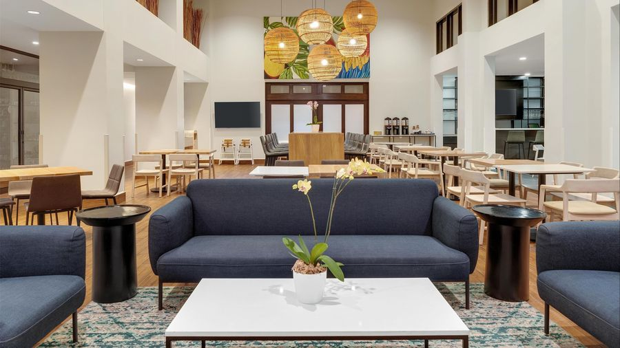
חלופה · 21.9
Hampton by Hilton San José Airport
אלחואלה, 5 דק' מהשדה · פשוט, נקי, פונקציונלי
$115–150 ללילה
▼
Hampton by Hilton San José Airport
- חדר ל-3
- חדר סטנדרטי עם 2 מיטות קווין.
- מחיר
- Kayak: "החל מ-$104", ממוצע ספטמבר $119 (החודש הזול בשנה).
- כלול
- ארוחת בוקר חמה, שאטל לשדה, חניה, בריכה, Wi-Fi.
- שורה תחתונה
- חוסך כ-$120–170 לעומת המריוט. ללילה של 8 שעות לפני יציאה מוקדמת זה הגיוני.
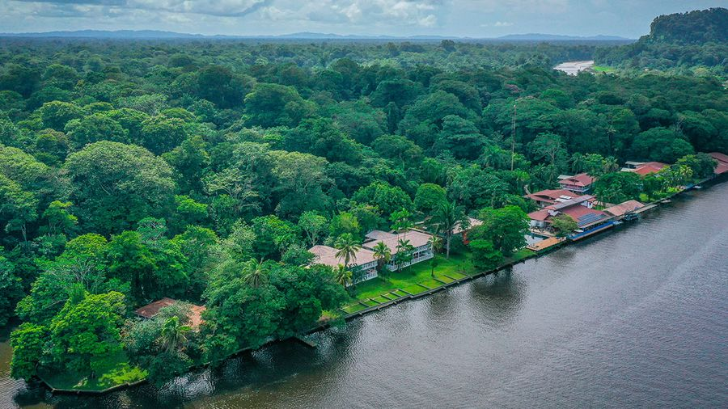
לילות 2–3 · 22–24.9
Tortuga Lodge & Gardens
טורטוגרו · Miss Perla King + Miss Evelyn · Full Experience
✔ הוזמן · $3,010 ל-2 חדרים
▼
Tortuga Lodge & Gardens
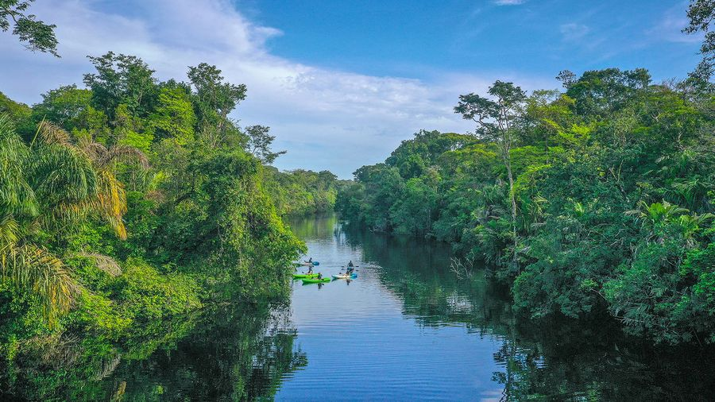
- ✔ הוזמן (6.9.2026)
- Full Experience, לא ניתן לביטול, 22–24.9:
• חדר 1: Miss Perla Suite, קינג, נעם ואורית — $1,479
• חדר 2: Miss Evelyn Suite, נגה — $1,158
סה"כ $2,637 + מסים $372.81 = $3,009.81. + דמי שימור $30 במקום. שני עיסויים (אחד לחדר). - עוד לסגור מול הלודג'
- 1) הסעה מהמריוט לרציף Caño Blanco לסירה של 10:30 (לבקש הצעה, הלודג' מתאם עם הסירה). 2) הסעה מ-Caño Blanco ללה פורטונה ב-24.9 עם עצירה ב-Tirimbina, או לבד. 3) סיור הטלת צבים ליל 22.9, $100 לאדם. 4) בקיעת גורים בבוקר 23.9, $60 לאדם. 5) לשריין את הסיורים הכלולים: שיט היסטוריה טבעית עם שחר 23.9, כפר 22.9 אחה"צ. 6) לציין שאורית פסקטריאנית.
- Full Experience כולל
- שיט משותף מרציף Caño Blanco (10:30 → 12:00) ובחזרה (8:30 → 10:00), צהריים וערב ביום ההגעה, 3 ארוחות ביום מלא, בוקר ביום היציאה, משקאות לא-אלכוהוליים בארוחות, עד 2 סיורים משותפים לכל לילה (שיט היסטוריה טבעית, קיאק, כפר טורטוגרו, הליכת דמדומים, Cerro Tortuguero, Laguna 4, Early Birds), עיסוי שוודי 50 דק' אחד לחדר.
- לא כלול
- הסעה יבשתית סן חוסה ↔ Caño Blanco (דרך הלודג' לפי הצעה, או ~$245–260 ואן פרטי), סיור הטלת צבים $100 לאדם (משותף, עונה 1.7–31.10), בקיעת גורי צבים $60 לאדם (מ-15.9, בדיוק בתאריכים שלנו), אלכוהול, קפה מיוחד, סיורים פרטיים.
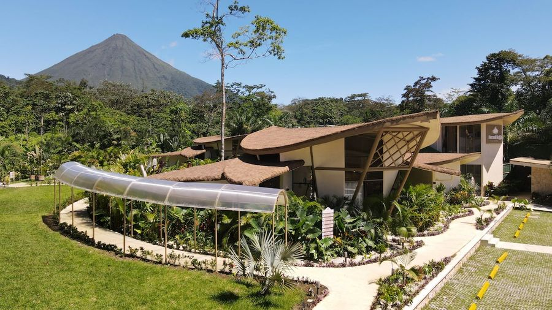
לילות 4–6 · 24–27.9
Arenal Keljá, Luxury Villa
לה פורטונה · וילה עם 2 חדרי קינג, בריכה פרטית מחוממת, נוף להר הגעש
✔ הוזמן · $1,079 ל-3 לילות
▼
Arenal Keljá, Luxury Villa
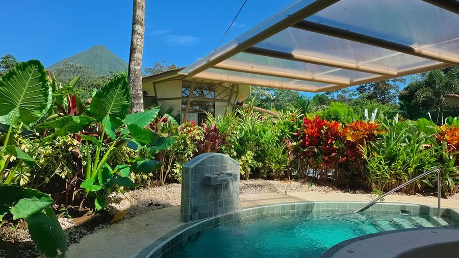
- ✔ הוזמן (7.9.2026)
- Airbnb, 24–27.9, 3 אורחים, $1,079 סה"כ כולל מסים ועמלות (מחיר מלא $1,484). ביטול חינם עד 19.9, החזר חלקי עד 24.9. Superhost, 5.0 מ-13 ביקורות, המארח (המלון) 4.92 מ-66.
- הווילה
- 2 חדרי שינה, קינג בכל חדר, ספה נפתחת בסלון, 2 חדרי אמבטיה, מטבח מאובזר, עמדת עבודה, טעינת רכב חשמלי, בריכה פרטית מחוממת עם ג'טים, מרפסת עם נוף להר הגעש.
- המתחם
- מלון בוטיק קטן עם כמה וילות. לאונג' משותף "Over the Magma" עם מטבח ביער, Oasis Spa, שבילי טבע קצרים, ונהר לה פורטונה (דגל כחול) לשחייה בשטח. מצלמות אבטחה חיצוניות.
- מיקום
- 3 ק"מ ממרכז לה פורטונה (5–8 דקות), 1 ק"מ מכביש מפל לה פורטונה, 20 דקות מהפארק הלאומי. חניה חינם.
- לא כלול
- ארוחת בוקר (מטבח + סופר בעיירה), מעיינות חמים (Tabacón / Ecotermales בתשלום), ניקיון יומי.
- צ'ק-אין
- עצמאי עם מנעול חכם מ-15:00, צ'ק-אאוט 11:00. איש קשר: Fabian, צוות Keljá, ב-WhatsApp דרך Airbnb. מציעים תיאום סיורים והסעות פרטיות.
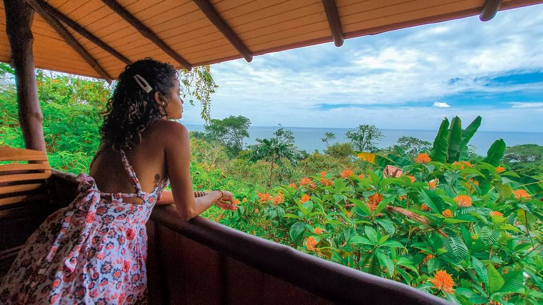
לילות 7–9 · 27–30.9
La Cusinga Eco Lodge
אוביטה · בקתות על צוק מול שמורת מרינו באיינה
$680–950 ל-3 לילות
▼
La Cusinga Eco Lodge
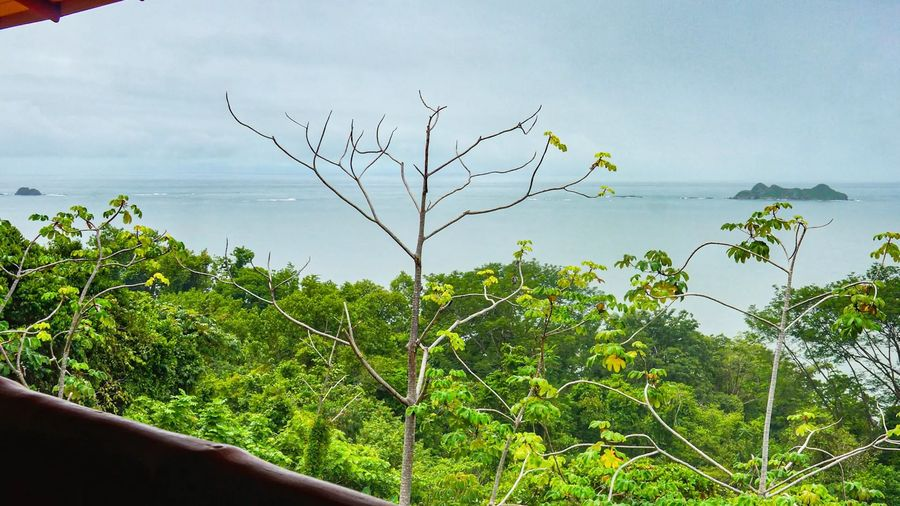
- חדר ל-3
- Ocean View Superior (2 מיטות זוגיות) או Ocean View Family (2 זוגיות + קומתיים).
- מחיר
- $200–280 ללילה (Tripadvisor: $198–212 "מחיר טוב", Kayak $135–383) + 13% מע"מ → כ-$680–950 לשלושה לילות.
- כלול
- ארוחת בוקר, Wi-Fi, שבילים פרטיים ליער ולחוף Playa Arco, מים חמים סולאריים.
- הערה
- אקו-לודג' פשוט יחסית (אין מיזוג בכל החדרים), מפצה בנוף ובשקט. המסעדה במקום מגישה ערב, ואוביטה במרחק 10 דקות.
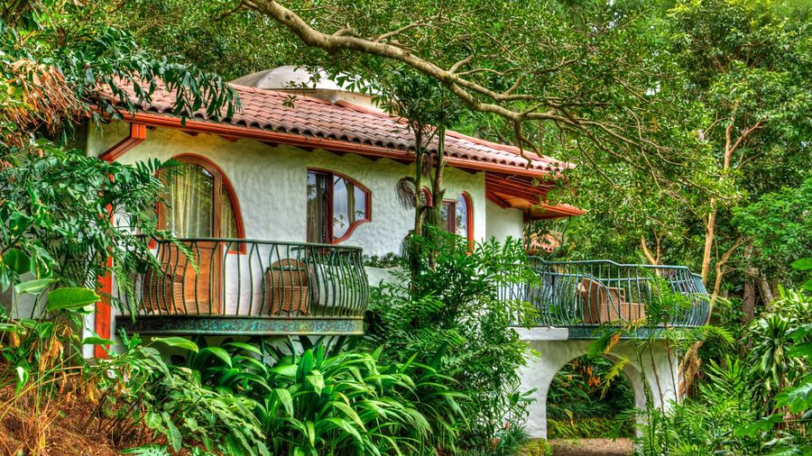
לילה 10 · 30.9
Finca Rosa Blanca Coffee Farm & Inn
סנטה ברברה דה הרדיה · פונדק בוטיק בתוך מטע קפה אורגני, 25 דק' מהשדה
$400–440 ללילה
▼
Finca Rosa Blanca Coffee Farm & Inn
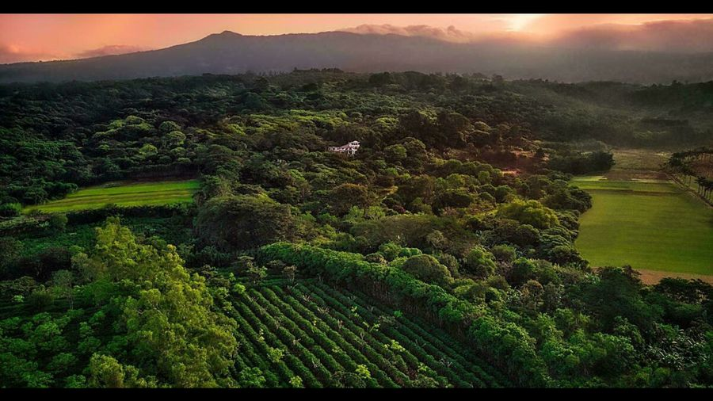
- חדר ל-3
- Junior Suite (קינג + מיטה נוספת), או וילה לעד 5.
- מחיר
- מחירון 2026 עונה ירוקה (1.5–14.11): $315 לזוג + 13% מע"מ + תוספת אדם שלישי (הערכה $50–75) → כ-$400–440.
- כלול
- ארוחת בוקר à la carte מלאה, קפה ועוגיות אחה"צ, חניה, סיור קיימות. סיור קפה בתשלום: $40 לאדם.
- מסעדה
- El Tigre Vestido במקום, ארוחת הסיום.
🍽️ מסעדות
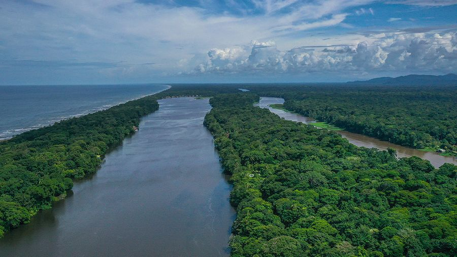
22–24.9 · טורטוגרו
Mydas Nest @ Tortuga Lodge
מסעדת הלודג' על הנהר · מטבח קריבי-בינלאומי
כלול בחבילה
▼
Mydas Nest @ Tortuga Lodge
- מחיר
- ב-Full Experience Package כלולות 3 ארוחות ביום (מצהריים ביום ההגעה עד ארוחת בוקר ביום היציאה). אלכוהול בנפרד. ⚠️ ב-River Package כלולה ארוחת בוקר בלבד.
- לאורית
- מטבח קריבי מבוסס קוקוס, ירקות שורש ודגים טריים, בקלות צמחוני/פסקטריאני.
- חלופה בכפר
- Miss Junie's, אפרו-קריבי אותנטי: דג שלם בקארי קוקוס, $15–25 לאדם.
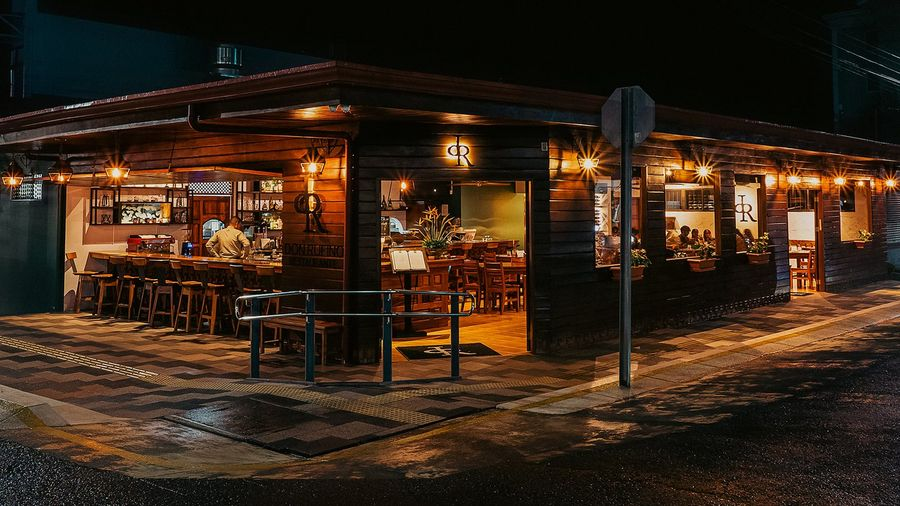
26.9 · לה פורטונה
Don Rufino
מסעדת השף המפורסמת של לה פורטונה · מטבח קוסטריקני מודרני
$40–60 לאדם
▼
Don Rufino
- מחירים
- האתר לא מפרסם מחירים ("upper-middle range"). הערכה: עיקריות $20–40, כ-$40–60 לאדם עם שתייה. פתוח 12:00–21:30.
- צמחוני / דגים
- לזניית פטריות, סלט מרוקאי, כרובית, סביצ'ה ודגים מדיג מקומי. המנה המפורסמת: "עוף של סבתא".
- הזמנה
- מומלץ, במיוחד בסופ"ש (26.9 הוא שבת). OpenTable או טלפון +506 2479-9997.
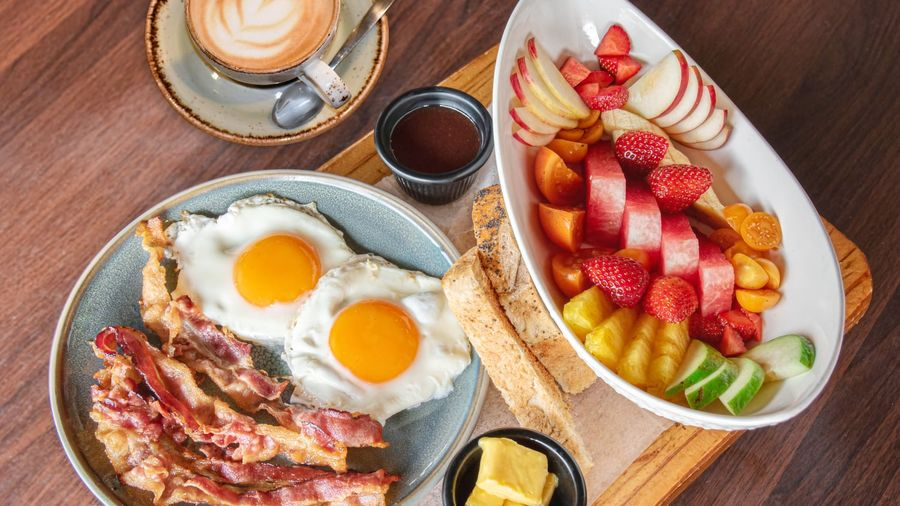
27–29.9 · אוביטה
Sibu Restaurant & Coffee Store
האופציה היומיומית באוביטה · בוקר עד ערב, 4.7 בטריפאדוויזור
$15–30 לאדם
▼
Sibu Restaurant & Coffee Store
- מה יש
- קוסטריקני-בינלאומי: פיצות, בוריטו סנאפר אדום, המבורגרים, אופציות טבעוניות וללא גלוטן. פתוח 07:00–21:30.
- מתי
- ארוחת צהריים אחרי הלווייתנים (28.9) או ערב קליל ביום ההגעה (27.9). חלופה: The Dome במרכז אוביטה.
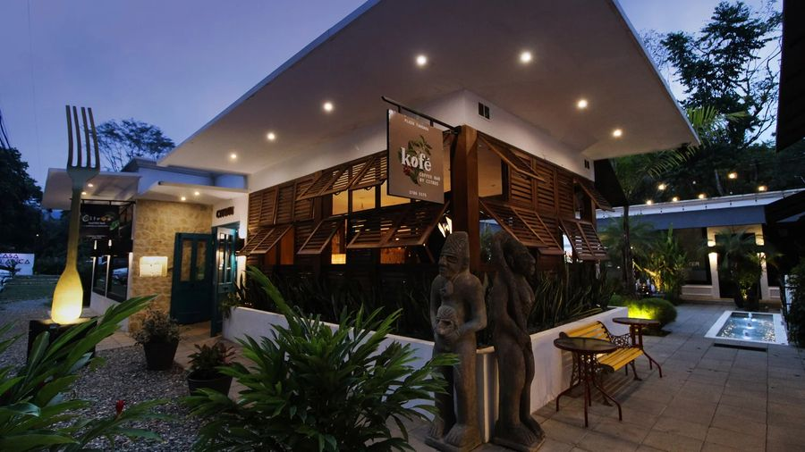
29.9 · אוחוצ'אל
Citrus Restaurante
הכפר הקולינרי אוחוצ'אל · מטבח ים-תיכוני-אסייתי יצירתי
$45–70 לאדם
▼
Citrus Restaurante
- מחירים (מהתפריט)
- עיקריות ₡12,000–27,000 = $26–59: פאד תאי ₡12,000, אנטרקוט ₡23,500. à la carte בלבד.
- צמחוני / דגים
- ניוקי טבעוני וקינוחים טבעוניים מסומנים. סשימי, סלמון מעושן, טונה, מולים, דג היום.
- שעות
- ב'–ש' 16:00–21:00, סגור בראשון. 29.9 הוא שלישי, מתאים. הזמנה מומלצת: WhatsApp +506 8704-8484.
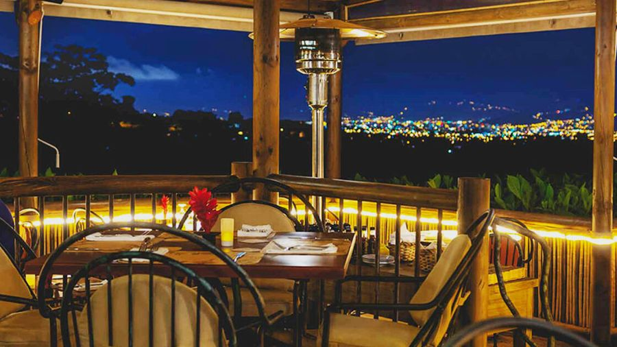
30.9 · הרדיה
El Tigre Vestido @ Finca Rosa Blanca
ארוחת הסיום · Farm-to-Table עם נוף לאורות סן חוסה
$45–75 לאדם
▼
El Tigre Vestido @ Finca Rosa Blanca
- מחירים
- תפריט טעימות "Coffee Connoisseur's" (6+ מנות) $65 לאדם ללא יין, דורש הזמנה 24 שעות מראש. à la carte לא מפורסם, דירוג $$$.
- צמחוני / דגים
- התפריט משתנה יומית לפי הקציר מהחווה האורגנית, ידידותי מאוד לצמחונים. דגים מדיג בר-קיימא.
- הזמנה
- OpenTable או +506 2269-9555. לבקש שולחן במרפסת.
💡 רשימות אוכל מלאות לכל אזור נמצאות בבלוקים למעלה. לצהריים זולים: Soda Víquez בלה פורטונה (קסאדו צמחוני כ-$9–11) וסודות דומות בכל עיירה.
💰 תקציב משוער
3 נוסעים, 11 ימים / 10 לילות, דולר אמריקאי. טווח נמוך = בחירות חסכוניות (Tabacón, שאטל משותף, סיורים בסיסיים). טווח גבוה = Nayara, הסעות פרטיות, כל התוספות. נגה (16) מתומחרת כמבוגרת בכל הסעיפים.
קוסטה ריקה: חלוקה לפי קטגוריה (אמצע הטווח)
🏨 לינה$5,430–5,830
| פריט | לילות | נמוך | גבוה | הערות |
|---|---|---|---|---|
| Marriott Hacienda Belén | 1 | $230 | $320 | כולל מע"מ. Hampton במקום: $115–150 |
| Tortuga Lodge, Full Experience | 2 | $3,040 | $3,040 | ✔ הוזמן: Miss Perla King + Miss Evelyn (2 חדרים), NR, $3,010 + דמי שימור $30 |
| Arenal Keljá, וילה | 3 | $1,079 | $1,079 | ✔ הוזמן ב-Airbnb, כולל מסים ועמלות. ללא ארוחת בוקר ומעיינות |
| La Cusinga Eco Lodge | 3 | $680 | $950 | כולל מע"מ וארוחת בוקר |
| Finca Rosa Blanca | 1 | $400 | $440 | מחירון 2026 + אדם שלישי |
| סה"כ | 10 | $5,430 | $5,830 | 2 מתוך 4 מקומות כבר הוזמנו |
🎟️ סיורים ואטרקציות (ל-3)$1,900–2,700
| פריט | יום | נמוך | גבוה | מחיר לאדם ומקור |
|---|---|---|---|---|
| סיור הטלת צבים, טורטוגרו | 2 | $300 | $300 | $100 לאדם דרך הלודג' (מחירון 2026). לא כלול בחבילה |
| בקיעת גורי צבים (אופציונלי, מ-15.9) | 3 | $0 | $180 | $60 לאדם, שחר או לפני שקיעה |
| כניסה לפארק טורטוגרו + סיורי תעלות | 2–3 | $0 | $0 | כלול ב-Full Experience |
| סיור שוקולד Tirimbina / Rainforest | 4 | $96 | $126 | $32 בלה פורטונה / $42 ב-Tirimbina |
| Místico Hanging Bridges | 5 | $108 | $150 | $36 עצמאי / $50 מודרך, כולל מס |
| מפל לה פורטונה | 5 | $60 | $60 | $20 למבוגר |
| הליכת לילה, Arenal Oasis | 5 | $170 | $170 | $56 (ברכב שלנו) |
| Sky Trek zipline (כולל Sky Tram) | 6 | $250 | $280 | $93, הנחת EARLYBIRD 10% בהזמנה 15+ יום מראש |
| Proyecto Asís | 6 | $120 | $180 | $40 סיור / $60 סיור + התנדבות |
| מעיינות חמים (ערב 24.9) | 4 | $170 | $300 | Ecotermales ~$55 / Tabacón $99 לאדם. ערב Tabacón עם ארוחה $168 לאדם (מחליף ארוחת ערב) |
| שביל הלבה Arenal 1968 (אופציונלי) | 5/7 | $0 | $75 | $25 |
| שייט לווייתנים ודולפינים, אוביטה | 8 | $240 | $255 | $78–85 (Bahía Aventuras / Ballena Tour), כולל כניסה לפארק |
| מפלי נאוויאקה | 9 | $35 | $96 | $10 הליכה + $5 חניה / $32 בטנדר 4x4 |
| מנואל אנטוניו, סיור מודרך + כניסה + חניה | 10 | $185 | $250 | $59 קבוצתי כולל כניסה / $80+ פרטי. חניה $6–10 |
| סיור קפה Finca Rosa Blanca | 11 | $120 | $120 | $40 |
| הר געש פואס (או גן Lankester) | 11 | $55 | $55 | $17 + חניה. חובה לשריין מראש ב-SINAC |
| שייט תנינים בטארקולס (אופציונלי) | 7 | $0 | $105 | הגשר חינם. שייט $35 |
| סה"כ | $1,909 | $2,702 |
🚗 רכב, דלק והסעות$1,350–1,810
| פריט | יום | נמוך | גבוה | הערות |
|---|---|---|---|---|
| הסעה פרטית מלון → רציף Caño Blanco / La Pavona | 2 | $245 | $260 | ~3 שעות, לרכב |
| טורטוגרו → לה פורטונה | 4 | $220 | $350 | שאטל משותף $65 לאדם + סירה / ואן פרטי $323 (מאפשר עצירה ב-Tirimbina) |
| Toyota Land Cruiser, Alamo, 7 ימים | 4–11 | $320 | $600 | הוזמן עם CDW בסיסי, גניבה ו-TPL. מחיר בסיס: להשלים |
| חבילת ביטוח מלא Alamo (0 השתתפות, ללא פיקדון) | 4–11 | $435 | $435 | במקום RentalCover: הפוליסה שלהם לא מכסה דרכי עפר וקיצה של €60k. לוודא שכולל צמיגים, שמשות וגרירה |
| דלק (~800 ק"מ) | $100 | $115 | ₡704 לליטר = $1.55, ~8–9 ל'/100 ק"מ | |
| חניות ואגרות | $30 | $50 | ||
| סה"כ | $1,350 | $1,810 |
🍽️ אוכל (ארוחות שלא כלולות)$1,500–2,300
| פריט | נמוך | גבוה | הערות |
|---|---|---|---|
| ארוחות ערב במסעדות שף (Nayara ×2, Don Rufino, Citrus, El Tigre Vestido) | $780 | $1,155 | $45–90 לאדם לערב |
| ארוחות ערב רגילות (מריוט, אוביטה ×2) | $240 | $360 | $25–40 לאדם |
| ארוחות צהריים (8 ימים מחוץ לטורטוגרו) | $315 | $510 | סודה $9–12 / מסעדה $20–30 לאדם |
| קפה, שתייה, נשנושים | $165 | $275 | $15–25 ליום |
| סה"כ | $1,500 | $2,300 | כ-$45–70 לאדם ליום. כלולים כבר: כל הארוחות בטורטוגרו, ארוחות בוקר ב-Nayara, La Cusinga ו-Rosa Blanca |
🎁 טיפים ושונות$200–350
| פריט | נמוך | גבוה | הערות |
|---|---|---|---|
| טיפים למדריכים, נהגים, קפטנים, חדרנים | $150 | $250 | $10–20 לאדם לסיור מודרך, $2–5 לנהג/קפטן, $2–5 ללילה לחדרנות. 10% שירות במסעדות כבר בחשבון |
| eSIM / SIM מקומי | $20 | $40 | Kölbi / Airalo |
| רזרבה קטנה | $30 | $60 | תרופות, גשם, מזכרות לא כלולות |
| סה"כ | $200 | $350 |
🇺🇸 החלק האמריקאי (10–21.9)$13,350–14,700
| פריט | נמוך | גבוה | הערות |
|---|---|---|---|
| טיסות (מהכיס) | $3,000 | $3,000 | לפי נעם |
| לינה: EVEN Hotel Alpharetta, 6 לילות | $1,350 | $1,350 | ✔ הוזמן (10–17.9) |
| לינה: 4 לילות נוספים, 2 חדרים ללילה | $1,200 | $1,600 | הערכה $150–200 לחדר ללילה. היעד תלוי במשפחה המורחבת, טרם הוזמן |
| השכרת רכב | $3,000 | $3,000 | ✔ הוזמן, לפני דלק וביטוח |
| ביטוח רכב | $0 | $0 | LDW ו-TPL כלולים בתעריף Avis (קוד 7S), ובנוסף LDW ללא השתתפות דרך Google. RentalCover מיותר |
| דלק, חניה ואגרות (Peach Pass) | $250 | $400 | הערכה. חניית מלון באטלנטה $20–40 ללילה אם רלוונטי |
| אוכל | $2,500 | $3,000 | $75–90 לאדם ליום כולל טיפ 18–20%. הערכת נעם $2,500 |
| אטרקציות | $1,500 | $1,500 | הערכת נעם |
| ESTA | $0 | $0 | ✔ שולם |
| ביטוח נסיעות רפואי לכל הטיול | $0 | $0 | דרך Google, ללא עלות. לוודא שמכסה גם את קוסטה ריקה |
| טלפון / eSIM | $150 | $150 | הערכת נעם |
| בופר: קניות, מזכרות, כביסה, Uber | $400 | $600 | רזרבה כללית לחלק האמריקאי |
| סה"כ | $13,350 | $14,700 |
🔍 תובנות
- טורטוגרו הוזמן: שני חדרים ב-Full Experience לא-ניתן-לביטול, $3,040 כולל דמי שימור. כ-$700 יותר מחדר משפחתי אחד, תמורת פרטיות לנגה, נוף לתעלה ושני עיסויים. הסעות וסיור הצבים עדיין לא כלולים.
- ארנאל הוזמן: וילה ב-Arenal Keljá ב-$1,079, כ-$800–1,600 פחות מ-Nayara, עם חדר שינה נפרד לנגה. המחיר האמיתי כולל ערב מעיינות ($170–300) וקניות לארוחות בוקר.
- הלילה הראשון: ממתין להצעת Böëna על Grano de Oro (~$350–390). Courtyard / Hampton עם קינג + ספה נפתחת חוסכים כ-$200.
- מה שנשאר פתוח בקוסטה ריקה: לילה ראשון, אוביטה, Rosa Blanca, ההסעות וההשכרה. החלק האמריקאי ($13,350–14,700 כולל טיסות ובופר) בטבלה נפרדת.
- מה לא בתקציב: טיסות, ביטוח נסיעות, מזכרות, וסיור צבים ב-$100 לאדם אם בוחרים את הגרסה של הלודג' (נספר בטווח הגבוה).
- הזמנות מוקדמות שחוסכות: Sky Adventures 10% (EARLYBIRD, 15+ יום מראש), Adobe דרך האתר הישיר, פואס ומנואל אנטוניו רק אונליין ב-SINAC.